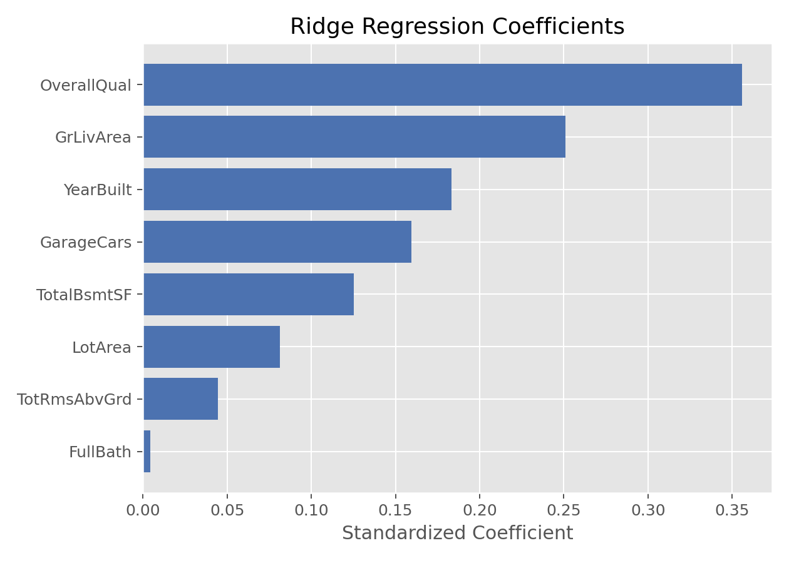

正则化与变量选择 · 06·01
Ridge回归
Ridge Regression
Ridge回归（Ridge Regression）
§1
方法概览
1.1 定义
Ridge 回归是在普通线性回归的损失函数中加入 L2 正则化项的一种方法，用来缓解多重共线性、减少过拟合，并提升模型在新数据上的稳定性。
1.2 它主要解决什么问题
- 研究问题：当自变量很多、彼此高度相关时，如何让线性回归更稳定。
- 适用任务：连续结局预测、共线性较强的回归建模、系数收缩。
- 常见医学场景：多个高度相关的临床指标共同预测一个连续结局，如风险评分、代谢指标、实验室指标综合建模。
1.3 直觉理解
Ridge 回归会“惩罚”过大的回归系数，让模型不那么依赖某几个偶然波动很大的特征。它不会把系数直接压到 0，但会让所有系数更平滑、更保守。
§2
数学形式
2.1 核心公式
$$ \hat{\boldsymbol{\beta}} = \arg\min_{\boldsymbol{\beta}} \left[ \sum_{i=1}^n (y_i - \mathbf{x}_i^\top \boldsymbol{\beta})^2 + \lambda \sum_{j=1}^p \beta_j^2 \right] $$
闭式解为：
$$ \hat{\boldsymbol{\beta}} = (\mathbf{X}^\top \mathbf{X} + \lambda \mathbf{I})^{-1}\mathbf{X}^\top \mathbf{y} $$
2.2 参数或统计量含义
- $\lambda$：正则化强度，越大表示对大系数惩罚越强。
- $\mathbf{X}^\top \mathbf{X} + \lambda \mathbf{I}$：通过加上 $\lambda \mathbf{I}$ 改善矩阵条件数，缓解共线性和数值不稳定。
- 系数收缩：Ridge 会让系数变小，但通常不会变成 0。
2.3 关键假设
- 结局为连续型。
- 线性可加结构基本合理。
- 特征之间可能存在较强相关性。
- 通常建议先对特征做标准化。
§3
数据形式与输入输出
3.1 适合的数据形式
- 自变量类型：连续变量为主，也可包含编码后的分类变量。
- 因变量类型：连续型。
- 数据结构：宽表数据，每行一个样本、每列一个特征。
- 是否适合高维数据：适合中高维、共线性明显的数据。
- 是否适合缺失较多数据：需先完成缺失值处理。
- 是否适合删失数据：不适合。
- 是否适合重复测量数据：不直接适合，应转向混合模型。
3.2 示例表格
下面是一种典型的房价建模结构，适合 Ridge 回归做连续结局预测：
| OverallQual | GrLivArea | GarageCars | TotalBsmtSF | YearBuilt | SalePrice |
|---|---|---|---|---|---|
| 7 | 1710 | 2 | 856 | 2003 | 208500 |
| 6 | 1262 | 2 | 1262 | 1976 | 181500 |
| 7 | 1786 | 2 | 920 | 2001 | 223500 |
| 7 | 1717 | 3 | 756 | 1915 | 140000 |
| 8 | 2198 | 3 | 1145 | 2000 | 250000 |
3.3 输入与产出
输入
- 输入数据：连续型结局和一组特征矩阵。
- 关键变量：正则化强度
alpha / lambda。 - 需要预处理的内容：标准化、缺失值处理、训练测试集划分。
产出
- 模型对象/统计结果：收缩后的回归系数、交叉验证选出的最佳
alpha。 - 参数估计：每个特征的收缩系数。
- 预测结果：连续型预测值。
- 不确定性指标：常结合交叉验证误差、测试集 MSE、$R^2$。
§4
适用场景
- 适合：多重共线性明显、预测导向强、希望保留全部特征的场景。
- 不适合：希望做强特征筛选、需要稀疏模型时。
- 使用前需要特别检查的点：是否标准化、共线性程度、
alpha选择方式。
§5
实现
常用包：
scikit-learn
from sklearn.linear_model import RidgeCV
from sklearn.pipeline import make_pipeline
from sklearn.preprocessing import StandardScaler
alphas = [0.01, 0.1, 1, 10, 100]
fit = make_pipeline(
StandardScaler(),
RidgeCV(alphas=alphas, cv=5)
)
fit.fit(X_train, y_train)
y_pred = fit.predict(X_test)
常用包：
glmnet
library(glmnet)
x <- model.matrix(SalePrice ~ . - 1, data = df)
y <- df$SalePrice
fit <- cv.glmnet(x, y, alpha = 0) # alpha = 0 -> ridge
coef(fit, s = "lambda.min")
§6
结果如何解释
- 核心结果看什么：最佳正则化强度、收缩后的系数分布、测试集性能。
- 每个主要参数如何解释：系数方向仍可解释，但数值会因正则化而向 0 收缩。
- 临床或医学意义如何表达：更强调“稳定预测”而不是“严格因果解释”。
- 常见误读：Ridge 系数变小不代表变量不重要，只代表模型为了稳定性对其进行了约束。
§7
推荐可视化
- 系数条形图。
- 不同正则化强度下的系数路径图。
- 真实值 vs 预测值散点图。
7.1 图像示例
下图展示了 Ridge 回归在房价建模中的标准化系数分布，体现了“整体收缩但不清零”的特征。

§8
优势、局限与常见坑
优势
- 对多重共线性更稳健。
- 能保留全部变量。
- 常常比普通线性回归有更好的泛化性能。
局限
- 不做真正的特征选择。
- 解释性比普通 OLS 略弱。
alpha需要调参。
常见坑
- 不标准化就直接做 Ridge。
- 把 Ridge 系数和 OLS 系数直接做量纲比较。
- 以为 Ridge 能自动筛出变量。
§9
与相近方法的区别
- 和线性回归的区别：Ridge 多了 L2 惩罚项。
- 和 Lasso 的区别：Ridge 收缩但不清零；Lasso 可以把部分系数压成 0。
- 和弹性网络的区别：弹性网络同时结合了 L1 和 L2。
§10
医学研究中的典型应用
- 多个相关生物标志物联合预测连续风险评分。
- 影像组学或实验室指标较多时的稳健回归建模。
- 需要保留全部协变量信息的预测任务。
§11
相关方法
§12
参考资料
- Hastie T, Tibshirani R, Friedman J. The Elements of Statistical Learning. 2nd ed. Springer; 2009.
- scikit-learn Developers.
sklearn.linear_model.Ridge. scikit-learn API Reference. https://scikit-learn.org/stable/modules/generated/sklearn.linear_model.Ridge.html （访问日期：2026-07-02） - CRAN. Package
glmnet. https://cran.r-project.org/package=glmnet （访问日期：2026-07-02）
— 黑盒词典 · 06·01 —